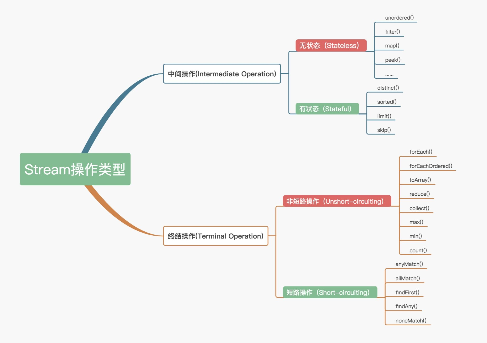
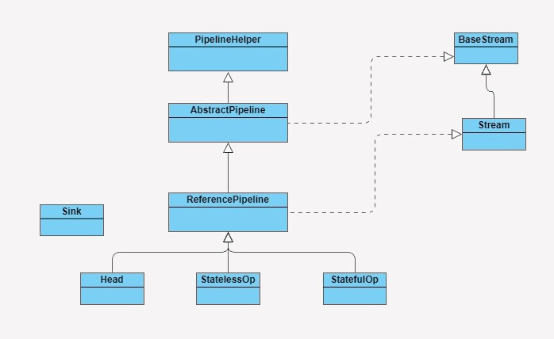
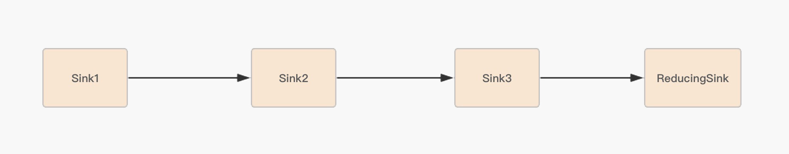

- 00 开篇词你为什么需要学习并发编程？.md.html
- 01 如何制定性能调优标准？.md.html
- 02 如何制定性能调优策略？.md.html
- 03 字符串性能优化不容小觑，百M内存轻松存储几十G数据.md.html
- 04 慎重使用正则表达式.md.html
- 05 ArrayList还是LinkedList？使用不当性能差千倍.md.html
- 06 Stream如何提高遍历集合效率？.md.html
- 07 深入浅出HashMap的设计与优化.md.html
- 08 网络通信优化之IO模型：如何解决高并发下IO瓶颈？.md.html
- 09 网络通信优化之序列化：避免使用Java序列化.md.html
- 10 网络通信优化之通信协议：如何优化RPC网络通信？.md.html
- 11 答疑课堂：深入了解NIO的优化实现原理.md.html
- 12 多线程之锁优化（上）：深入了解Synchronized同步锁的优化方法.md.html
- 13 多线程之锁优化（中）：深入了解Lock同步锁的优化方法.md.html
- 14 多线程之锁优化（下）：使用乐观锁优化并行操作.md.html
- 15 多线程调优（上）：哪些操作导致了上下文切换？.md.html
- 16 多线程调优（下）：如何优化多线程上下文切换？.md.html
- 17 并发容器的使用：识别不同场景下最优容器.md.html
- 18 如何设置线程池大小？.md.html
- 19 如何用协程来优化多线程业务？.md.html
- 20 磨刀不误砍柴工：欲知JVM调优先了解JVM内存模型.md.html
- 21 深入JVM即时编译器JIT，优化Java编译.md.html
- 22 如何优化垃圾回收机制？.md.html
- 23 如何优化JVM内存分配？.md.html
- 24 内存持续上升，我该如何排查问题？.md.html
- 25 答疑课堂：模块四热点问题解答.md.html
- 26 单例模式：如何创建单一对象优化系统性能？.md.html
- 27 原型模式与享元模式：提升系统性能的利器.md.html
- 28 如何使用设计模式优化并发编程？.md.html
- 29 生产者消费者模式：电商库存设计优化.md.html
- 30 装饰器模式：如何优化电商系统中复杂的商品价格策略？.md.html
- 31 答疑课堂：模块五思考题集锦.md.html
- 32 MySQL调优之SQL语句：如何写出高性能SQL语句？.md.html
- 33 MySQL调优之事务：高并发场景下的数据库事务调优.md.html
- 34 MySQL调优之索引：索引的失效与优化.md.html
- 35 记一次线上SQL死锁事故：如何避免死锁？.md.html
- 36 什么时候需要分表分库？.md.html
- 37 电商系统表设计优化案例分析.md.html
- 38 数据库参数设置优化，失之毫厘差之千里.md.html
- 39 答疑课堂：MySQL中InnoDB的知识点串讲.md.html
- 41 如何设计更优的分布式锁？.md.html
- 42 电商系统的分布式事务调优.md.html
- 43 如何使用缓存优化系统性能？.md.html
- 44 记一次双十一抢购性能瓶颈调优.md.html
- 加餐 什么是数据的强、弱一致性？.md.html
- 加餐 推荐几款常用的性能测试工具.md.html
- 答疑课堂：模块三热点问题解答.md.html
- 结束语 栉风沐雨，砥砺前行！.md.html
06 Stream如何提高遍历集合效率？
你好，我是刘超。
上一讲中，我在讲 List 集合类，那我想你一定也知道集合的顶端接口 Collection。在 Java8 中，Collection 新增了两个流方法，分别是 Stream() 和 parallelStream()。
通过英文名不难猜测，这两个方法肯定和 Stream 有关，那进一步猜测，是不是和我们熟悉的 InputStream 和 OutputStream 也有关系呢？集合类中新增的两个 Stream 方法到底有什么作用？今天，我们就来深入了解下 Stream。
什么是 Stream？
现在很多大数据量系统中都存在分表分库的情况。
例如，电商系统中的订单表，常常使用用户 ID 的 Hash 值来实现分表分库，这样是为了减少单个表的数据量，优化用户查询订单的速度。
但在后台管理员审核订单时，他们需要将各个数据源的数据查询到应用层之后进行合并操作。
例如，当我们需要查询出过滤条件下的所有订单，并按照订单的某个条件进行排序，单个数据源查询出来的数据是可以按照某个条件进行排序的，但多个数据源查询出来已经排序好的数据，并不代表合并后是正确的排序，所以我们需要在应用层对合并数据集合重新进行排序。
在 Java8 之前，我们通常是通过 for 循环或者 Iterator 迭代来重新排序合并数据，又或者通过重新定义 Collections.sorts 的 Comparator 方法来实现，这两种方式对于大数据量系统来说，效率并不是很理想。
Java8 中添加了一个新的接口类 Stream，他和我们之前接触的字节流概念不太一样，Java8 集合中的 Stream 相当于高级版的 Iterator，他可以通过 Lambda 表达式对集合进行各种非常便利、高效的聚合操作（Aggregate Operation），或者大批量数据操作 (Bulk Data Operation)。
Stream 的聚合操作与数据库 SQL 的聚合操作 sorted、filter、map 等类似。我们在应用层就可以高效地实现类似数据库 SQL 的聚合操作了，而在数据操作方面，Stream 不仅可以通过串行的方式实现数据操作，还可以通过并行的方式处理大批量数据，提高数据的处理效率。
接下来我们就用一个简单的例子来体验下 Stream 的简洁与强大。
这个 Demo 的需求是过滤分组一所中学里身高在 160cm 以上的男女同学，我们先用传统的迭代方式来实现，代码如下：
Map<String, List<Student>> stuMap = new HashMap<String, List<Student>>();
for (Student stu: studentsList) {
if (stu.getHeight() > 160) { // 如果身高大于 160
if (stuMap.get(stu.getSex()) == null) { // 该性别还没分类
List<Student> list = new ArrayList<Student>(); // 新建该性别学生的列表
list.add(stu);// 将学生放进去列表
stuMap.put(stu.getSex(), list);// 将列表放到 map 中
} else { // 该性别分类已存在
stuMap.get(stu.getSex()).add(stu);// 该性别分类已存在，则直接放进去即可
}
}
}
我们再使用 Java8 中的 Stream API 进行实现：
\1. 串行实现
Map<String, List<Student>> stuMap = stuList.stream().filter((Student s) -> s.getHeight() > 160) .collect(Collectors.groupingBy(Student ::getSex));
\2. 并行实现
Map<String, List<Student>> stuMap = stuList.parallelStream().filter((Student s) -> s.getHeight() > 160) .collect(Collectors.groupingBy(Student ::getSex));
通过上面两个简单的例子，我们可以发现，Stream 结合 Lambda 表达式实现遍历筛选功能非常得简洁和便捷。
Stream 如何优化遍历？
上面我们初步了解了 Java8 中的 Stream API，那 Stream 是如何做到优化迭代的呢？并行又是如何实现的？下面我们就透过 Stream 源码剖析 Stream 的实现原理。
1.Stream 操作分类
在了解 Stream 的实现原理之前，我们先来了解下 Stream 的操作分类，因为他的操作分类其实是实现高效迭代大数据集合的重要原因之一。为什么这样说，分析完你就清楚了。
官方将 Stream 中的操作分为两大类：中间操作（Intermediate operations）和终结操作（Terminal operations）。中间操作只对操作进行了记录，即只会返回一个流，不会进行计算操作，而终结操作是实现了计算操作。
中间操作又可以分为无状态（Stateless）与有状态（Stateful）操作，前者是指元素的处理不受之前元素的影响，后者是指该操作只有拿到所有元素之后才能继续下去。
终结操作又可以分为短路（Short-circuiting）与非短路（Unshort-circuiting）操作，前者是指遇到某些符合条件的元素就可以得到最终结果，后者是指必须处理完所有元素才能得到最终结果。操作分类详情如下图所示：

我们通常还会将中间操作称为懒操作，也正是由这种懒操作结合终结操作、数据源构成的处理管道（Pipeline），实现了 Stream 的高效。
2.Stream 源码实现
在了解 Stream 如何工作之前，我们先来了解下 Stream 包是由哪些主要结构类组合而成的，各个类的职责是什么。参照下图：

BaseStream 和 Stream 为最顶端的接口类。BaseStream 主要定义了流的基本接口方法，例如，spliterator、isParallel 等；Stream 则定义了一些流的常用操作方法，例如，map、filter 等。
ReferencePipeline 是一个结构类，他通过定义内部类组装了各种操作流。他定义了 Head、StatelessOp、StatefulOp 三个内部类，实现了 BaseStream 与 Stream 的接口方法。
Sink 接口是定义每个 Stream 操作之间关系的协议，他包含 begin()、end()、cancellationRequested()、accpt() 四个方法。ReferencePipeline 最终会将整个 Stream 流操作组装成一个调用链，而这条调用链上的各个 Stream 操作的上下关系就是通过 Sink 接口协议来定义实现的。
3.Stream 操作叠加
我们知道，一个 Stream 的各个操作是由处理管道组装，并统一完成数据处理的。在 JDK 中每次的中断操作会以使用阶段（Stage）命名。
管道结构通常是由 ReferencePipeline 类实现的，前面讲解 Stream 包结构时，我提到过 ReferencePipeline 包含了 Head、StatelessOp、StatefulOp 三种内部类。
Head 类主要用来定义数据源操作，在我们初次调用 names.stream() 方法时，会初次加载 Head 对象，此时为加载数据源操作；接着加载的是中间操作，分别为无状态中间操作 StatelessOp 对象和有状态操作 StatefulOp 对象，此时的 Stage 并没有执行，而是通过 AbstractPipeline 生成了一个中间操作 Stage 链表；当我们调用终结操作时，会生成一个最终的 Stage，通过这个 Stage 触发之前的中间操作，从最后一个 Stage 开始，递归产生一个 Sink 链。如下图所示：

下面我们再通过一个例子来感受下 Stream 的操作分类是如何实现高效迭代大数据集合的。
List<String> names = Arrays.asList(" 张三 ", " 李四 ", " 王老五 ", " 李三 ", " 刘老四 ", " 王小二 ", " 张四 ", " 张五六七 ");
String maxLenStartWithZ = names.stream()
.filter(name -> name.startsWith(" 张 "))
.mapToInt(String::length)
.max()
.toString();
这个例子的需求是查找出一个长度最长，并且以张为姓氏的名字。从代码角度来看，你可能会认为是这样的操作流程：首先遍历一次集合，得到以“张”开头的所有名字；然后遍历一次 filter 得到的集合，将名字转换成数字长度；最后再从长度集合中找到最长的那个名字并且返回。
这里我要很明确地告诉你，实际情况并非如此。我们来逐步分析下这个方法里所有的操作是如何执行的。
首先 ，因为 names 是 ArrayList 集合，所以 names.stream() 方法将会调用集合类基础接口 Collection 的 Stream 方法：
default Stream<E> stream() {
return StreamSupport.stream(spliterator(), false);
}
然后，Stream 方法就会调用 StreamSupport 类的 Stream 方法，方法中初始化了一个 ReferencePipeline 的 Head 内部类对象：
public static <T> Stream<T> stream(Spliterator<T> spliterator, boolean parallel) {
Objects.requireNonNull(spliterator);
return new ReferencePipeline.Head<>(spliterator,
StreamOpFlag.fromCharacteristics(spliterator),
parallel);
}
再调用 filter 和 map 方法，这两个方法都是无状态的中间操作，所以执行 filter 和 map 操作时，并没有进行任何的操作，而是分别创建了一个 Stage 来标识用户的每一次操作。
而通常情况下 Stream 的操作又需要一个回调函数，所以一个完整的 Stage 是由数据来源、操作、回调函数组成的三元组来表示。如下图所示，分别是 ReferencePipeline 的 filter 方法和 map 方法：
@Override
public final Stream<P_OUT> filter(Predicate<? super P_OUT> predicate) {
Objects.requireNonNull(predicate);
return new StatelessOp<P_OUT, P_OUT>(this, StreamShape.REFERENCE,
StreamOpFlag.NOT_SIZED) {
@Override
Sink<P_OUT> opWrapSink(int flags, Sink<P_OUT> sink) {
return new Sink.ChainedReference<P_OUT, P_OUT>(sink) {
@Override
public void begin(long size) {
downstream.begin(-1);
}
@Override
public void accept(P_OUT u) {
if (predicate.test(u))
downstream.accept(u);
}
};
}
};
}
@Override
@SuppressWarnings("unchecked")
public final <R> Stream<R> map(Function<? super P_OUT, ? extends R> mapper) {
Objects.requireNonNull(mapper);
return new StatelessOp<P_OUT, R>(this, StreamShape.REFERENCE,
StreamOpFlag.NOT_SORTED | StreamOpFlag.NOT_DISTINCT) {
@Override
Sink<P_OUT> opWrapSink(int flags, Sink<R> sink) {
return new Sink.ChainedReference<P_OUT, R>(sink) {
@Override
public void accept(P_OUT u) {
downstream.accept(mapper.apply(u));
}
};
}
};
}
new StatelessOp 将会调用父类 AbstractPipeline 的构造函数，这个构造函数将前后的 Stage 联系起来，生成一个 Stage 链表：
AbstractPipeline(AbstractPipeline<?, E_IN, ?> previousStage, int opFlags) {
if (previousStage.linkedOrConsumed)
throw new IllegalStateException(MSG_STREAM_LINKED);
previousStage.linkedOrConsumed = true;
previousStage.nextStage = this;// 将当前的 stage 的 next 指针指向之前的 stage
this.previousStage = previousStage;// 赋值当前 stage 当全局变量 previousStage
this.sourceOrOpFlags = opFlags & StreamOpFlag.OP_MASK;
this.combinedFlags = StreamOpFlag.combineOpFlags(opFlags, previousStage.combinedFlags);
this.sourceStage = previousStage.sourceStage;
if (opIsStateful())
sourceStage.sourceAnyStateful = true;
this.depth = previousStage.depth + 1;
}
因为在创建每一个 Stage 时，都会包含一个 opWrapSink() 方法，该方法会把一个操作的具体实现封装在 Sink 类中，Sink 采用（处理 -> 转发）的模式来叠加操作。
当执行 max 方法时，会调用 ReferencePipeline 的 max 方法，此时由于 max 方法是终结操作，所以会创建一个 TerminalOp 操作，同时创建一个 ReducingSink，并且将操作封装在 Sink 类中。
@Override
public final Optional<P_OUT> max(Comparator<? super P_OUT> comparator) {
return reduce(BinaryOperator.maxBy(comparator));
}
最后，调用 AbstractPipeline 的 wrapSink 方法，该方法会调用 opWrapSink 生成一个 Sink 链表，Sink 链表中的每一个 Sink 都封装了一个操作的具体实现。
@Override
@SuppressWarnings("unchecked")
final <P_IN> Sink<P_IN> wrapSink(Sink<E_OUT> sink) {
Objects.requireNonNull(sink);
for ( @SuppressWarnings("rawtypes") AbstractPipeline p=AbstractPipeline.this; p.depth > 0; p=p.previousStage) {
sink = p.opWrapSink(p.previousStage.combinedFlags, sink);
}
return (Sink<P_IN>) sink;
}
当 Sink 链表生成完成后，Stream 开始执行，通过 spliterator 迭代集合，执行 Sink 链表中的具体操作。
@Override
final <P_IN> void copyInto(Sink<P_IN> wrappedSink, Spliterator<P_IN> spliterator) {
Objects.requireNonNull(wrappedSink);
if (!StreamOpFlag.SHORT_CIRCUIT.isKnown(getStreamAndOpFlags())) {
wrappedSink.begin(spliterator.getExactSizeIfKnown());
spliterator.forEachRemaining(wrappedSink);
wrappedSink.end();
}
else {
copyIntoWithCancel(wrappedSink, spliterator);
}
}
Java8 中的 Spliterator 的 forEachRemaining 会迭代集合，每迭代一次，都会执行一次 filter 操作，如果 filter 操作通过，就会触发 map 操作，然后将结果放入到临时数组 object 中，再进行下一次的迭代。完成中间操作后，就会触发终结操作 max。
这就是串行处理方式了，那么 Stream 的另一种处理数据的方式又是怎么操作的呢？
4.Stream 并行处理
Stream 处理数据的方式有两种，串行处理和并行处理。要实现并行处理，我们只需要在例子的代码中新增一个 Parallel() 方法，代码如下所示：
List<String> names = Arrays.asList(" 张三 ", " 李四 ", " 王老五 ", " 李三 ", " 刘老四 ", " 王小二 ", " 张四 ", " 张五六七 ");
String maxLenStartWithZ = names.stream()
.parallel()
.filter(name -> name.startsWith(" 张 "))
.mapToInt(String::length)
.max()
.toString();
Stream 的并行处理在执行终结操作之前，跟串行处理的实现是一样的。而在调用终结方法之后，实现的方式就有点不太一样，会调用 TerminalOp 的 evaluateParallel 方法进行并行处理。
final <R> R evaluate(TerminalOp<E_OUT, R> terminalOp) {
assert getOutputShape() == terminalOp.inputShape();
if (linkedOrConsumed)
throw new IllegalStateException(MSG_STREAM_LINKED);
linkedOrConsumed = true;
return isParallel()
? terminalOp.evaluateParallel(this, sourceSpliterator(terminalOp.getOpFlags()))
: terminalOp.evaluateSequential(this, sourceSpliterator(terminalOp.getOpFlags()));
}
这里的并行处理指的是，Stream 结合了 ForkJoin 框架，对 Stream 处理进行了分片，Splititerator 中的 estimateSize 方法会估算出分片的数据量。
ForkJoin 框架和估算算法，在这里我就不具体讲解了，如果感兴趣，你可以深入源码分析下该算法的实现。
通过预估的数据量获取最小处理单元的阀值，如果当前分片大小大于最小处理单元的阀值，就继续切分集合。每个分片将会生成一个 Sink 链表，当所有的分片操作完成后，ForkJoin 框架将会合并分片任何结果集。
合理使用 Stream
看到这里，你应该对 Stream API 是如何优化集合遍历有个清晰的认知了。Stream API 用起来简洁，还能并行处理，那是不是使用 Stream API，系统性能就更好呢？通过一组测试，我们一探究竟。
我们将对常规的迭代、Stream 串行迭代以及 Stream 并行迭代进行性能测试对比，迭代循环中，我们将对数据进行过滤、分组等操作。分别进行以下几组测试：
- 多核 CPU 服务器配置环境下，对比长度 100 的 int 数组的性能；
- 多核 CPU 服务器配置环境下，对比长度 1.00E+8 的 int 数组的性能；
- 多核 CPU 服务器配置环境下，对比长度 1.00E+8 对象数组过滤分组的性能；
- 单核 CPU 服务器配置环境下，对比长度 1.00E+8 对象数组过滤分组的性能。
由于篇幅有限，我这里直接给出统计结果，你也可以自己去验证一下，具体的测试代码可以在Github上查看。通过以上测试，我统计出的测试结果如下（迭代使用时间）：
- 常规的迭代 <Stream 并行迭代 <Stream 串行迭代
- Stream 并行迭代 < 常规的迭代 <Stream 串行迭代
- Stream 并行迭代 < 常规的迭代 <Stream 串行迭代
- 常规的迭代 <Stream 串行迭代 <Stream 并行迭代
通过以上测试结果，我们可以看到：在循环迭代次数较少的情况下，常规的迭代方式性能反而更好；在单核 CPU 服务器配置环境中，也是常规迭代方式更有优势；而在大数据循环迭代中，如果服务器是多核 CPU 的情况下，Stream 的并行迭代优势明显。所以我们在平时处理大数据的集合时，应该尽量考虑将应用部署在多核 CPU 环境下，并且使用 Stream 的并行迭代方式进行处理。
用事实说话，我们看到其实使用 Stream 未必可以使系统性能更佳，还是要结合应用场景进行选择，也就是合理地使用 Stream。
总结
纵观 Stream 的设计实现，非常值得我们学习。从大的设计方向上来说，Stream 将整个操作分解为了链式结构，不仅简化了遍历操作，还为实现了并行计算打下了基础。
从小的分类方向上来说，Stream 将遍历元素的操作和对元素的计算分为中间操作和终结操作，而中间操作又根据元素之间状态有无干扰分为有状态和无状态操作，实现了链结构中的不同阶段。
**在串行处理操作中，**Stream 在执行每一步中间操作时，并不会做实际的数据操作处理，而是将这些中间操作串联起来，最终由终结操作触发，生成一个数据处理链表，通过 Java8 中的 Spliterator 迭代器进行数据处理；此时，每执行一次迭代，就对所有的无状态的中间操作进行数据处理，而对有状态的中间操作，就需要迭代处理完所有的数据，再进行处理操作；最后就是进行终结操作的数据处理。
**在并行处理操作中，**Stream 对中间操作基本跟串行处理方式是一样的，但在终结操作中，Stream 将结合 ForkJoin 框架对集合进行切片处理，ForkJoin 框架将每个切片的处理结果 Join 合并起来。最后就是要注意 Stream 的使用场景。
思考题
这里有一个简单的并行处理案例，请你找出其中存在的问题。
// 使用一个容器装载 100 个数字，通过 Stream 并行处理的方式将容器中为单数的数字转移到容器 parallelList
List<Integer> integerList= new ArrayList<Integer>();
for (int i = 0; i <100; i++) {
integerList.add(i);
}
List<Integer> parallelList = new ArrayList<Integer>() ;
integerList.stream()
.parallel()
.filter(i->i%2==1)
.forEach(i->parallelList.add(i));